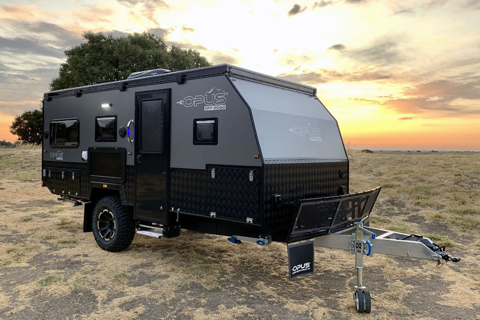

6 Most Popular Travel Trailer Brands
Buying a new travel trailer is one of the biggest decisions anyone can make. Here I will go over the 6 best travel trailers to purchase. These travel trailers have great reviews and not many complaints. Every company will have some type of complaint against them at some point in time, but these 6 travel trailers are among the ones with the least amount.
These are the 6 most popular travel trailers
- Grand Design RV
- Jayco
- Heartland RV
- KZ-RV (Thor)
- Airstream
- Gulf Stream
Grand Design RV
Jayco
Heartland RV
KZ-RV
Airstream
Gulf Stream

This company prides itself on quality assurance so much so that before any of their units are sent to a dealer, they send it to the PDI first. PDI is short for pre-delivery inspection, and just simply means that a dealer technician will go over the whole vehicle piece by piece to ensure the quality is top-notch. The PDI has over 288 items on their checklist, and only after each travel trailer has been through this process will they be allowed to be sold to consumers.

Jayco happens to be one of the most popular brands out there. If you happen to have seen 10 travel trailers in the last 7 days, I would bet at least 1 was of a Jayco brand. Jayco has been investing in the environment for many years with its program called "Jayco eco-advantage". The program aims to reduce its carbon footprint by reducing the amount of energy and water being used in its facilities. It also aims to reduce the amount of waste being disposed of.
This company also aims to have all its RVs environmentally friendly by packing different types of features in their vehicles like Lightweight Norco NextGen Steel Frame that makes its Rvs more fuel-efficient. Other parts of their RVs allow for less energy consumption.
It is always a great idea to test all the vehicles you plan on purchasing. But knowing that a company cares about the environment as well as vehicle safely will push you in the right direction.

The Heartland RV company was founded in 2003. This company got popular because of its toy haulers and has since become popular with its travel trailers. Heartland aims to always design travel trailers with luxury and space in mind. Their travel trailers feel spacious on the inside even when it is a small one. There are options when it comes to choosing your travel trailer from this company as they produce both large trailers and lighter ones.
Just like the Jayco company, Heartland prides itself on being as green focussed as possible. Recycling and waste management is a priority.

You can sign up for a tour of this company's factory in Indiana. While you are on this tour, the guide will show you where all their travel trailers are built and the process they take to build them. The company was made in 2010 by two companies coming together. These two companies are the Damon Motor Coach company and the Four Winds International company.

The Airstream RV company has been around for nearly 100 years and is known to many as one of the first manufacturers of camper trailers. The brand is also known as one of the most loved and is one company that constantly sells new vehicles to new customers. Airstream was founded in the year 1929 by Wally Byam. Before 1929 Wally Byam had always been trying new ways to improve on his model T on his journey to turn it into a house on wheels.
The company's travel trailers are less susceptible to water damage as they are all built using aluminum instead of fiberglass. Imagine purchasing an Airstream Travel Trailer today and be able to use it with full functionality 30 years later. This is the standard of quality that Airstream has been known for over the many decades they have been in business.
One other thing that sets Airstream apart from other RV manufacturers is that all electronics and appliances are installed by hand which means that everything has to be custom fitted. Other Rv Manufacturers have their electronics and appliances put in place by robots. Just like with supercars worth millions of dollars, hand-built travel trailers ensure the highest quality build.

Gulf Stream was founded in 1971 and is headquartered in Indiana just like KZ-RZ. They produce 13 different types of travel trailers and tou haulers which means you will have a great selection of items to choose from. There are 19 different floor plans of the Ameri-Lite model. This is the most popular model and wil;l always guarantee a floorplan that fits your family needs.
Other brands give 1 or 2 floorplan options in each of their different travel trailers, but Gulf Stream goes overboard to ensure everyone gets satisfied by not being limited to less than 5 options.
Travel Trailer Manufacturers List
- Airstream
- Allen Camper Manufacturing
- Armadillo Trailer Manufacturing
- Bigfoot Industries
- Braxton Creek
- Casita Travel Trailers
- CrossRoads RV
- Cruiser RV
- Dutchmen RV
- East to West
- Escape Trailer Industries
- Eveland's, Inc
- Forest River RV
- Genesis Supreme RV
- Grand Design RV
- Gulf Stream Coach
- Heartland RV
- Highland Ridge RV
- inTech RV
- Jayco
- KZ-RZ
Best Travel Trailer Brands
We have gone over 6 of the best travel trailers on the market above. Now it is your turn to decide which company best suits your needs.